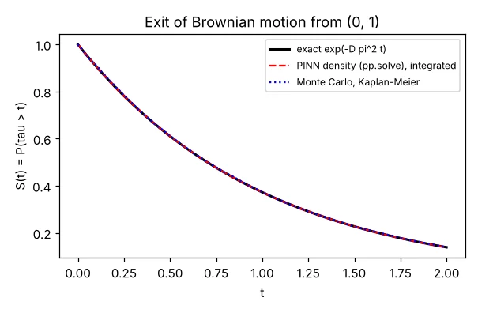
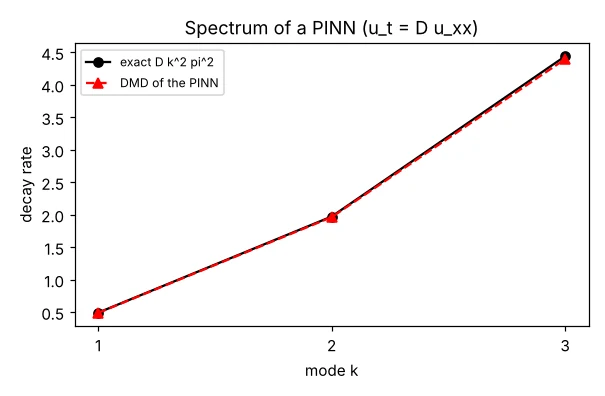

Ferramenta de análise é fácil de vender e difícil de auditar: o gráfico fica bonito e ninguém pergunta contra o que ele foi conferido. O experimento pega cinco ferramentas do kit e coloca cada uma contra uma referência que não é o próprio modelo.
Primeira passagem: PINN contra Monte Carlo contra a exata
Na equação do calor 1D, a PINN resolve a primeira passagem com erro máximo de 5,6×10⁻⁴ contra a solução analítica. O Monte Carlo, com 20 mil caminhos Euler-Maruyama, fica em 4,4×10⁻³, oito vezes pior. O tempo médio restrito até 2,0 fecha em 0,87247 na PINN, contra 0,872465 exato e 0,87515 ± 4,7×10⁻³ no Monte Carlo. A PINN leva 104 s de solver; o Monte Carlo, o tempo dos 20 mil caminhos.

Koopman: as taxas de decaimento saem do espectro
Rodando DMD de posto 3 nos retratos da PINN, as taxas de decaimento dos três modos saem com erro relativo de 0,6%, 0,5% e 1,0% contra os autovalores exatos −D(kπ)². O controle com os mesmos retratos gerados pela solução exata dá erro zero, como tem que dar, e o resíduo do ResDMD nos três autopares fica em 9,7×10⁻⁴.
O detalhe honesto: o posto escolhido pelo critério de Gavish-Donoho nos retratos da PINN é 22, e não 3. Ou seja, o espectro é recuperável desde que o analista saiba quantos modos existem, e é isso que o artigo reporta em vez de esconder.

Onde medir importa 45%
Escolhendo quando medir por informação de Fisher, os quatro tempos ótimos são 0, 0, 2,025 e 2,025, em 401 pontos da grade. O desvio-padrão do difusor que sai do limitante de Cramér-Rao é 0,00102, e o empírico de 500 ajustes é 0,00102. Amostrando de forma uniforme, os mesmos dois números vão para 0,00149 e 0,00146: 45% pior pelo mesmo número de medidas.
Análise dimensional e alerta precoce
Com seis grandezas e posto 3, Buckingham pi reduz o problema a três grupos, e o colapso das curvas vai de 1,68 de dispersão relativa para 8×10⁻⁵, com p=0,002 num controle de permutação (999 reatribuições). Nos indicadores de alerta precoce, a variância e a autocorrelação de janela móvel sobem antes da sela (tau de Kendall 0,94 e 0,91, p de 0,005 e 0,01) e não sobem no controle estável (tau −0,22, p=0,55).
E o caso que separa os dois indicadores: um sistema estável com ruído crescendo levanta a variância (0,97, p=0,005) sem levantar a autocorrelação (0,38, p=0,27). Um indicador sozinho teria dado alarme falso, e é por isso que o kit mede os dois.

O que isso vale
Cinco ferramentas que medem o que prometem, cada uma com a referência ao lado e o erro declarado. É menos vistoso que uma arquitetura nova, e é o que permite usar qualquer uma delas numa decisão.